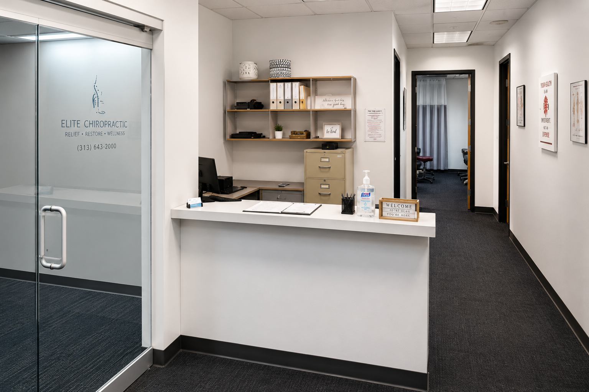
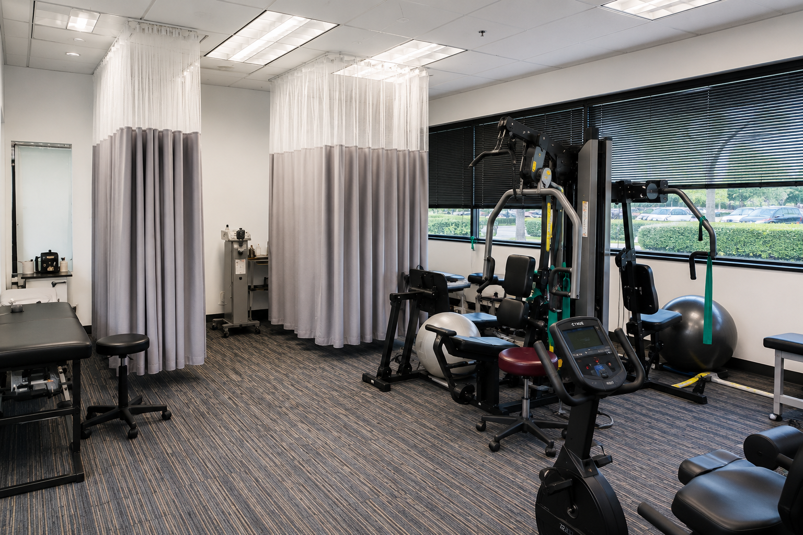

Dearborn Chiropractic, Auto Accident & Sports Recovery Care
Auto Accident, Sports Injury & Chiropractic Care
In Dearborn, Michigan.
Chiro One Sports & Spine Center helps patients recover from auto accident injuries, sports injuries, back pain, neck pain, headaches, mobility limitations, and physical therapy needs through conservative, patient-focused care.

High-Priority Care
Injured In A Car Accident?
Pain after a car accident may not always appear immediately. If you are experiencing neck pain, back pain, headaches, stiffness, soreness, or reduced mobility after a collision, our team can help you understand your next step.
- Whiplash-related discomfort
- Neck and back pain after an accident
- Headaches and stiffness after impact
- Mobility and movement limitations
- Documentation of accident-related symptoms
Priority Accident Intake
Auto accident requests are routed as high-priority inquiries so the office can follow up quickly and help patients request care.
Website → Intake Form → Office Alert → Follow-UpQuick Patient Intake
Request Appointment Availability.
Whether you were injured in an accident, recovering from a sports injury, or dealing with ongoing pain, this quick form helps the office understand your concern and follow up.
Conditions We Help With
Care For Injury Recovery, Pain Relief, Mobility & Performance.
Since 2009, Chiro One Sports & Spine Center has provided conservative, research-based chiropractic care for patients in Dearborn and surrounding communities.
Auto Accident Injuries
Evaluation and care for accident-related pain, stiffness, whiplash, headaches, and mobility concerns after a collision.
Sports Therapy & Recovery
Recovery-focused care for active patients dealing with sports injuries, mobility limitations, pain, stiffness, and performance setbacks.
Physical Therapy & Rehab
Rehabilitation support to help improve strength, mobility, movement quality, and functional recovery.
Back Pain Treatment
Care plans designed to address lower back pain, stiffness, and everyday movement limitations.
Neck Pain Treatment
Support for neck pain, tension, limited range of motion, headaches, and discomfort after injury.
Wellness Chiropractic Care
Ongoing chiropractic care focused on alignment, mobility, prevention, and long-term wellness.
Sports Therapy & Recovery
Helping Active Patients Recover, Move Better, And Return To Activity.
Sports injuries and repetitive movement issues can affect performance, comfort, and daily function. Chiro One Sports & Spine Center supports athletes and active patients through chiropractic care, physical therapy, mobility work, and recovery-focused treatment.
- Sports injury recovery
- Mobility and flexibility limitations
- Rehabilitation support
- Performance-related pain
- Return-to-activity care
For Athletes & Active Patients
Care designed for patients who want to recover properly, move with confidence, and stay active with less pain and limitation.
Sports Injury → Therapy → Recovery → MovementInside Our Office
Modern Facilities Designed For Recovery And Wellness.
Our Dearborn clinic provides chiropractic care, rehabilitation, physical therapy support, and injury recovery services in a clean, comfortable, patient-focused environment.
Inside Our Office
Modern Treatment Rooms, Therapy Space & Personalized Care.
Chiro One Sports & Spine Center provides a clean, professional environment designed to support recovery, rehabilitation, chiropractic care, and patient comfort.

Welcoming Reception Area

Physical Therapy & Recovery Space

Private Treatment Rooms

Consultation & Examination Room
Office Information
Request Care With Chiro One Sports & Spine Center.
Location
6 Parklane Blvd Suite 100
Dearborn, MI 48126
Call
Hours
Mon–Thurs: 9:00am – 5:00pm
Friday: 9:30am – 2:30pm
Sat–Sun: Closed
Request Care
Ready To Take The Next Step?
Send a quick appointment request and our team will contact you regarding availability.